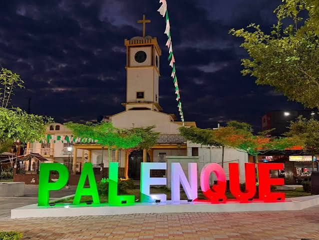
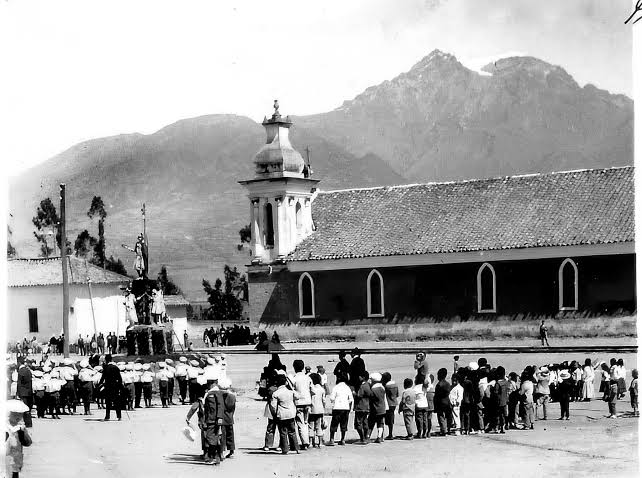
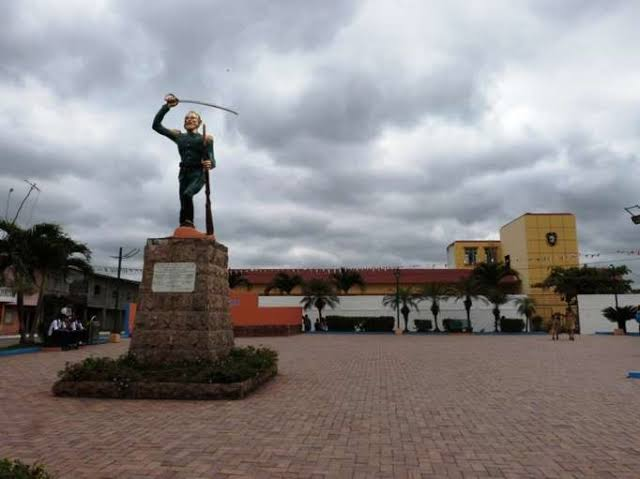
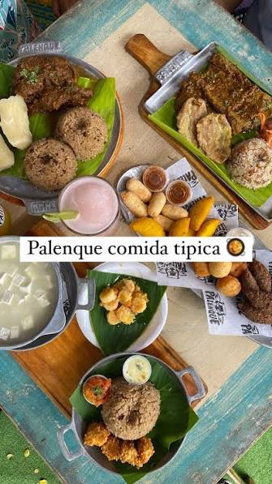
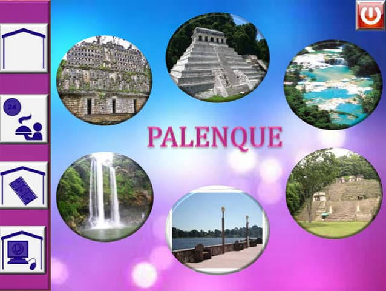
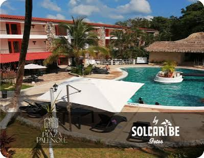
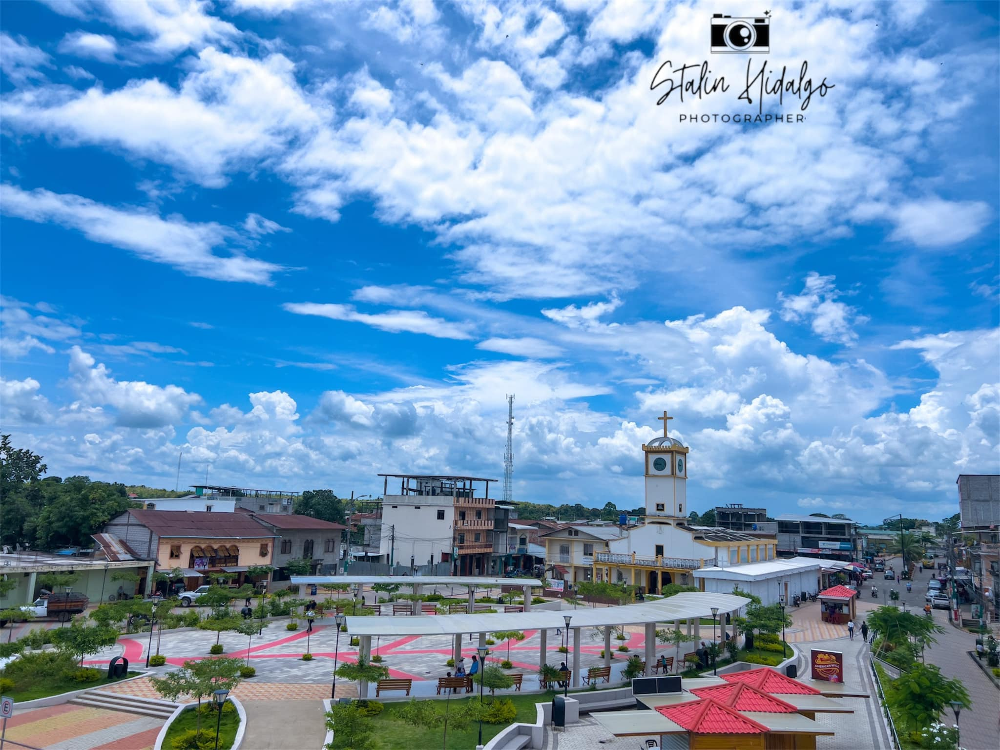

Bienvenido a la página oficial del cantón Palenque. Famoso por su exuberante naturaleza, la hospitalidad de su gente y su importancia agrícola dentro de la provincia de Los Ríos.

Palenque posee una rica tradición histórica vinculada a las culturas ancestrales de la costa. Fue erigido como cantón el 2 de agosto de 1990, desligándose de Vinces para impulsar su propio desarrollo productivo y turístico.

El cantón Palenque organiza su territorio de la siguiente manera:

La gastronomía palenqueña se destaca por rescatar los sabores criollos tradicionales:

Destacan la hermosa Reserva Ecológica Jauneche (bosque húmedo tropical primario), las playas de agua dulce en el río Palenque durante la época estival y el malecón de la ciudad.

Palenque ofrece alojamientos locales acogedores, hostales sencillos y estancias rurales pensadas para el visitante que busca ecoturismo y tranquilidad.
Alcalde: Jordy Carriel

Tiene una población aproximada de 25.000 habitantes, caracterizados por su identidad montubia, amabilidad y dedicación a las actividades del campo.
Se sitúa en la zona centro-occidental de la provincia de Los Ríos, limitando con los cantones Mocache, Vinces, Vinces y la provincia del Guayas.